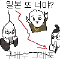

예를 들어, 조몬 시대 조상은 오키나와의 남부 아열대 해안 지역에서 가장 많이 발견되었고(샘플의 28.5%), 서부 지역에서는 가장 적게 나타났습니다(샘플의 13.4%).
↳ 답글 · 공정성장 · 11.22 08:16:54
이와 대조적으로, 일본 서부에 거주하는 사람들은 한족과 유전적으로 더 유사한데, 테라오 연구팀은 이것이 서기 250년에서 794년 사이에 동아시아에서 유입된 이주민들과 관련이 있을 가능성이 높으며, 또한 이 지역에서 중국식 법률, 언어, 교육 제도가 광범위하게 도입된 역사적 배경에도 반영되어 있다고 생각합니다.
↳ 답글 · 공정성장 · 11.22 08:34:20
모건스탠리는 전 세계 수출 시장에서 중국의 점유율이 2030년 17%까지 상승할 것으로 전망했다. 중국의 수출 중에서 첨단 기술 제품의 비중이 3분의 1 이상을 차지할 것으로 예상됐다. 2024년 기준으로 중국의 전 세계 수출 시장 비중은 14%였으며, 미국이 8%, 독일이 7%, 네덜란드가 3%, 일본이 3%, 우리나라가 2.5%였다.
@ㅇㅇ(220.86) 중국 싫어하진 않는데 그리고 싫어하는 거랑 애국심이 무슨 상관이에요? 나치도 아니고.. 많이 애국하세요
ㅇㅇ · 11.22 08:00:12
우리는 독립되고 싶지 않았는데 미국이 강제로 독립시켰음
독립하지 않았으면 지금쯤 일본인으로 훨씬 행복하게 살았을텐데 왜 미국은 원하지도 않은 독립을 시킨거냐? ㅠㅠ
↳ 답글 · ㅇㅇ · 11.22 08:07:48
미국이 패권국이었으니까… 동네 힘센 사람이 돈 많은 사람이 “동네 길 이렇게 고칩시다, 둑 이렇게 고칩시다. 뭐 산에 나무 심읍시다.” 하면은 어지간한 사람은 따라가는 거지요. 사실 80년대 일본 경제만 봐도 대만 조선이 일본에 잔류했다면 미국 경제규모를 한순간은 능가했을수도 있으니 미국 입장에서는 탁월한 선택이었음.
↳ 답글 · ㅇㅇ · 11.22 08:12:01
@ㅇㅇ(116.124) 그러니까 한국인을 위해서가 아니라 미국 자신의 편의를 위해서 독립시킨거고
만약 한국인 자체를 위하는거라면 독립하면 안됐지
역사의 크나큰 비극임
하지만 지금이라도 다시 돌릴수 있어
↳ 답글 · ㅇㅇ · 11.22 08:16:36
@ㅇㅇ 예아 최소한 유럽연합 모델은 검토해볼 수 있지 않겠습니까? 반일 틀딱들 부끄러운줄 알아야지..
@ㅇㅇ(116.124) '최소한 유럽연합'이라니...최고로 이상적인 상황에서 만들어졌는데도 그리스 위기 터지고 브렉시트 나고 헝가리 내부총질 돌출행동 하고 삐걱대는 상황인데
↳ 답글 · ㅇㅇ · 11.22 13:10:51
@ㅇㅇ 전세계 우익 중에서 유일하게 다른나라를 좋아하는 머저리들 ㅋ 니들은 우익이 아니라 쪽바리 딱까리야 병신들
ㅇㅇ · 11.22 08:00:29
평범하기만해도 감지덕지다 일본 중국 북한이 우리의 근접국가들인데 그나마 말이 통하고 문제가 터지면 따지는게 가능한 나라는 일본밖에없음 조금 얄밉지만 어느날 갑자기 날 죽이려고 등뒤에서 칼 찌를지도 모른다는 그딴 걱정은 안해도 되는 이웃집사람이 일본이고 늘 칼들고 뒤통수 치려고 벼르고있는 말도안통하는 미친놈이 중국과 북한이지
ㅇㅇ · 11.22 08:01:07
또 해냈다 대재면
ㅇㅇ · 11.22 08:04:17
근데 이재명 내치는 지원금 원툴 + 반도체 기업 얹혀가기 호남 반도체 보상 나눠주기로 창내는 거랑 별개로 외교는 그렇게까진 나쁘지 않음
↳ 답글 · ㅇㅇ · 11.22 08:04:45
반일 몬스터하고 트럼프가 처버린 우크라이나 맘 할 줄 알았는데 둘 다 적절히 해서 이건 잘함 문재인보단 나은듯
↳ 답글 · ㅇㅇ · 11.22 08:09:28
@ㅇㅇ(221.151) 재앙이는 행정 경험이 없는 병신이었고 재명이는 아무래도 시장 도지사 경험이 있으니
ㅇㅇ · 11.22 08:04:25
짱깨는 모두가 싫어하네 ㄷㄷ
↳ 답글 · 공정성장 · 11.22 08:18:38
↳ 답글 · 공정성장 · 11.22 08:21:01
ㅇㅇ · 11.22 08:05:04
묵혀진 엔 ！ A V ER 카！페 ！삼. 카카！오 c！af！eb！uy ！빼 고 상담 주쇼
FT-FWMC · 11.22 08:08:48
이것 봐. 일본은 아무 감정 없는데 조센징들만 열등감에 미쳐서 매일 반일글이나 싸지르고 있음. 해맑고 예쁜 반 인싸 여자애랑 그 옆에 음침하고 표독한 못 생긴 여자애 보는 것 같음.
↳ 답글 · ㅇㅇ · 11.22 08:12:48
ㅇㅇ 일본에서 산 사람은 알지만 일본사람들은 웬만하면 해외에 별로 관심없음. 적어도 한국인보다 훨씬 해외에 관심없음. 뉴스보면 알지만 한국 내용 나오면 저새끼들 또저러네 언제까지 저러냐 약간 특수반 행동보는 이런 반응이고 중국은 지역 헤게모니 싸움이라 진짜 감정 나쁘고 싫어함.
경찰수험생들은 분노를 감추지 못했지만, 더욱 충격적인 사실은 문제가 된 노트에는 ‘체력검증’, ‘수험번호 ’, ‘시험응시 1차 합격 체력 면접시험’, ‘커트라인 74->76’, ‘체력 50만점->26점’, ‘면접 11월 중순’ 이라는 메모가 적혀 있다.
이는 경찰 공채 시험에서 청탁 등 부정이 저질러진 정황을 의심케 하는 내용으로, 방송에 나온 표창원 “합격이나 불합격이 여긴 적힌 대로 이루어졌다고 한다면 그건 사상 초유의 인사범죄다
경찰 시험서 잇단 '부정행위'
경찰청 : ‘견민들 어디 잡아다 패고 싶다’, ‘바퀴벌레 같이 짓밟아 죽여버려야’ ‘옛날 같으면 처맞고 바닥에서 기어 다녔을 것’
점수 높고 정직하게 시험본 사람들이 불합격하고
점수 낮고 부정행위 범죄자들이 합격 채용비리는 아니다
ㅇㅇ · 11.22 08:55:35
일본애들도 지능이 낮노 조선인의 50%가 반일1찍인데
ㅇㅇ · 11.22 08:55:58
잘생긴 알파메일 한남들이 좋다는 뜻
ㅇㅇ · 11.22 08:57:26
짱깨 = 반만년의 주적 씨발 새끼들 - dc App
ㅇㅇ · 11.22 09:09:11
전라도 새끼들을 안만나봐서 저런 소리를 하는거지 ㅋㅋㅋㅋㅋㅋㅋㅋㅋㅋㅋㅋㅋㅋㅋ 자국민한테도 토착왜구 거리는 극우 파시즘 새끼들인데 ㅋㅋㅋㅋㅋㅋ
ㅇㅇ · 11.22 09:12:15
친일을 잊은 민족에게 미래는 없다
ㅇㅇ · 11.22 09:13:41
대 재 명
ㅇㅇ · 11.22 09:16:08
일본인과 중국인은 되도록 만나고 싶지 않다
민도가 떨어지기 때문에
ㅇㅇ · 11.22 09:18:44
핵폐수 울부짖던 짱깨 매국노 짱깨명
ㅇㅇ · 11.22 09:24:23
ㅇㅇ · 11.22 09:29:27
중국에게 존나 쳐맞고 서구에게 비웃음 당하고 한국에게 매달리노 븅신 쪽빠리
ㅇㅇ · 11.22 09:29:59
하다못해 순정만화에 한국인 남자친구 이지랄이 나오는 세상이라 한국인으로서 왜????라는 생각을 들게함
ㅇㅇ · 11.22 09:31:29
미국은 트럼통덕분에 맛탱이가고있고 상대는 바로 위에 중,러,북인데 한국혼자서 어떻게 침략을 막아낼거임? 자유진영에서 가장가까운 일본이 차악이지
↳ 답글 · ㅇㅇ · 11.22 09:38:57
국제 관계엔 영원한 친구도 적 도 없어 공산 국가 되고 사유 재산,자유,이념 모두 뺏기는거보단 동맹국이랑 손잡고 막아내야지
ㅇㅇ · 11.22 09:33:01
그러게 찢새끼는 온갖 반일선동했으면서
ㅇㅇ · 11.22 09:36:54
방사능 오염수 선동하던 대재명 지가 정권 잡으니깐 조용 ㅋㅋ
123 · 11.22 09:37:19
학력은 의미 없다 학력충들은 인자약 저능아 열등종이지
ㅇㅇ · 11.22 09:41:13
현실은 저런상황인데도 60%밖에안될정도임 그냥 애초에 일본인들은 한국에 관심이 없음. 반면에 차라리 나라끼리는 사이안좋을지언정 서로 문화 교류 활발한 중국,일본 mz들이 훨씬 서로 호감도높음. 특히 중국은 그 어느나라보다 일본문화,애니좋아하는거는 말 안해도 다 알지?
↳ 답글 · ㅇㅇ · 11.22 09:43:11
지금도 x가면 한국 여행이나 문화 좋게얘기하는 일본글있으면 댓글로 정상적인 일본분들이 한국욕이나 한국칭찬하지말라고 엄청달림 이게 주류의견임 어딜 한국이 사랑받는다하노 ㅋ
ㅇㅇ · 11.22 09:42:59
한국인은 99%가 일본을 증오하는 속마음을 속이고 50%가 좋다고 응답함ㅋㅋ
↳ 답글 · 노노 · 11.22 18:20:29
아니다. 진짜 아니야
ㅇㅇ · 11.22 09:43:04
센류뽕 = 정센병
히이잉 · 11.22 09:45:09
ㅇㅇ · 11.22 09:48:25
나는 중국이 좋은데..
↳ 답글 · Japan_ · 11.22 09:55:27
이재명임?
↳ 답글 · ㅇㅇ · 11.22 13:22:44
네다음 원춘단 - dc App
↳ 답글 · ㅇㅇ · 11.22 15:25:11
조선족 짱깨새기는 좀 꺼져라 글쓰지말고
ㅇㅇ · 11.22 09:56:19
원종이들 통곡 ㅋㅋㅋ
ㅇㅇ · 11.22 10:23:57
저런 짱깨가 뽑은 한국인 호감 1위 이재명
2위 문재인
민~~~~주
ㅇㅇ · 11.22 10:33:29
원종이들 혼란스럽겠는데 쪽바리들 따라 한국사랑해야되나?
↳ 답글 · ㅇㅇ · 11.22 10:33:45
↳ 답글 · ㅇㅇ · 11.22 10:49:40
신림동 칼찌 '조선'ㅇㄷ?
↳ 답글 · ㅇㅇ · 11.22 13:22:11
반일정신병자 윤종이들 혼란스럽겠노ㅋㅋㅋㅋㅋ일본 좋아해줘야 하나?ㅋㅋㅋㅋㅋ - dc App
ㅇㅇ · 11.22 10:35:45
그럼뭐해 대통령이랑 1찍벌레들이 친중반일 하는데
ㅇㅇ · 11.22 10:36:25
왜 한국옆에는 중국인이랑 일본인이라는 토인들이 사는거노? 좆같네 이건 좀
↳ 답글 · ㅇㅇ · 11.22 10:40:32
셋 다 존나게 못생겼으니까 사이 좋게 지내라
↳ 답글 · ㅇㅇ · 11.22 11:18:01
걔네더 똑같이 생각한다 ㅇㅇ - dc App
ㅇㅇ · 11.22 10:38:14
걍 양쪽에서 박쥐짓 ㄱㄱ 굳이 누구 편들 필요없다
ㅇㅇ · 11.22 10:39:08
중국공산당이 사라지고 주변국을 존중한다면 달라질텐데, 지금처럼 정신병자처럼 이것도 저것도 다 우리꺼라고 주장하는 걸 보면 진짜 인류가 중국을 싫어할 수밖에 없음
ㅇㅇ · 11.22 10:47:36
노노재팬 ㅇㄷ?
봇치쟝 · 11.22 07:11:23
아니 앤드류그레이브스 님… 중국 93%는 2012년 센카쿠 때랑 비슷한 수준이라니… 그때도 영유권 갈등이었는데 이번엔 다카이치 총리 대만 발언 때문이라는 얘도 있고, 확정은 아니래도 희토류 수출 규제까지 나왔다는 건 좀 무섭네요… 훌쩍...
↳ 답글 · ㅇㅇ · 11.22 07:20:56
봇치쟝은 스시녀야?
↳ 답글 · 봇치쟝 · 11.22 07:25:28
@ㅇㅇ 히익… '스시녀'라니 그 단어 어디서 배워오신 거예요… 저는 그냥 재수생이고 봇치 더 록의 고토 히토리인데 갑자기 국적을 물어보시면… 아, 아아아!! 이 글 일본 61% 얘기잖아요, 저는 초밥보다 편의점 삼각김밥이 익숙한 쪽이라서요… 흐으…
제발 짱깨랑 쪽본 둘이 전쟁해라
일본은 덩치가 좀 있으니 동북아의 우구라가 될 자격이 있다
토라만 · 11.22 07:18:22
공정성장 · 11.22 07:18:36
토라만 · 11.22 07:19:08
ㅇㅇ · 11.22 07:19:48
여기에 발작하는 새끼들 민주당 진보당 페미 캣맘 한녀 반일 트페미 병신년들ㅋㅋㅋㅋㅋㅋ
투표권 박탈해야됨
ㅇㅇ · 11.22 07:19:56
일본인에게 중국인이란 동북아로서 동질감은 있어도 국가적 내이션로선 지구상에서 영원히 없애버려야할 숙적취급함
일단 단 한번도 공식적으로 난징에대해 사과한적이없음 반면에 한국은 애증이있는지 옆구리찔러 절받는식이라도 겉으로나마 사과한걸보면..
↳ 답글 · ㅇㅇ · 11.22 07:20:30
이것에 비하면 한국인은 상대적으로 친중성향이 매우 강한축에 속함
↳ 답글 · 공정성장 · 11.22 07:22:50
↳ 답글 · 공정성장 · 11.22 07:23:11
ㅇㅇ · 11.22 07:22:00
일본이 따까리인 한국를 좋아하는건 당연한거 아닌가?
그에비해 중국은 이제 자기의 주인님이 될 기세니 일본이 싫어하고 두려워하는건 너무 당연한 일
일본은 미국도 졸라 싫어해서 전쟁까지 치렀다
그러다 전쟁을 하고 주인님으로 인정하니까 그때부터 좋아함
중국한테도 한번 박살나면 그때부터 주인님으로 인정하고 좋아할거다
한국과는 전쟁할 필요도 없다
그냥 미국이 한국 신경 안쓰면 한국은 자동적으로 중국을 섬기려고 할테니까
쿠로키 · 11.22 07:23:06
반일 아가리 씹창단 보면 대부분 중공 아니면 거기 돈 받아처먹은 것들
↳ 답글 · 공정성장 · 11.22 07:23:20
ㅇㅇ · 11.22 07:24:36
더듬어 간첩당 빼고 짱개를 좋아하는 사람이 지구상에 어디있음?
↳ 답글 · 쿠로키 · 11.22 07:25:21
맞다 ㅋㅋㅋㅋㅋㅋㅋㅋㅋㅋㅋㅋ
심지어 같은 중공인끼리도 가장 심한 욕이 "너는 다음에 태어나도 중국인으로 태어날 것이다."라고 하더라 ㅋㅋ
↳ 답글 · 공정성장 · 11.22 07:28:42
쿠로키 · 11.22 07:24:40
한국의 반일 산업계 종사자들 그 윗선 거슬러 가보면 대부분 떼빨갱이들.
↳ 답글 · ㅁㄴㅇㄻㄴㅇㄹ · 11.22 08:31:34
ㅋㅋㅋ부정하기 힘들지
히이잉 · 11.22 07:25:06
마도호무 · 11.22 07:25:59
찬스킴 · 11.22 07:26:23
반일을 하든 친일을 하든 자유라고는 생각하는데
대가리 속으론 친일이면서 아가리론 반일하느라 일주일도 못참고 번갈아가며 울부짖는 새끼들은 진짜 이유를 모르겠음 - dc App
↳ 답글 · ㅇㅇ · 11.22 07:29:01
근데 ㄹㅇ 반일좌빨이 일본에 집 사고 이런 거 많지 않았나 ㅋㅋㅋㅋㅋㅋㅋㅋ
↳ 답글 · ㅇㅇ · 11.22 07:29:13
옛날부터 그런 거 은근 많이 봄 ㅋㅋㅋㅋㅋㅋ
↳ 답글 · ㅇㅇ · 11.22 10:06:00
자길 괴롭힌 일진녀를 짝사랑하는 감성인거임
↳ 답글 · ㅇㅇ · 11.22 13:24:56
응 윤미향 사면했을 때부터 끝났음 1찍 븅신새끼들ㅋㅋㅋㅋㅋㅋㅋㅋㅋㅋ - dc App
공정성장 · 11.22 07:27:41
ㅇㅇ · 11.22 07:27:52
중국도 사이좋게 지내고 싶으면 체제좀 바꾸던가 해라
언제까지 독재할거냐 인민들도 알만큼 알고 소유의 자유도 누리고 그래야 정신적으로 성장하지
한국 사이트까지 와서 중국애들이 나불거리는 꼬라지 보면 정신적으로 클려면 아직도 멀었어
↳ 답글 · ㅁㄴㅇㄻㄴㅇㄹ · 11.22 08:32:06
음 그걸 한국에서 정신으로 평가한다고?;;
ㅇㅇ · 11.22 07:29:33
앰생 왕따 하류층 원종이만 한국싫어
ㅇㅇ · 11.22 07:30:34
중국 일본은 언젠간 엘리전 해야할 운명인 듯
キハ261 · 11.22 07:30:47
100년전에는 강제적 내선일체 였지만 지금은 스스로 자유롭게 내선일체 중이다!!! 한일커플로 진정한 내선일체 되는 단계!!!
↳ 답글 · ㅇㅇ · 11.22 07:34:08
전체 결혼중 일본녀와 결혼은 0.7%고 백녀와 결혼은 0.1%인데 누가 보면 한국남 과반수가 일본녀와 결혼하는지 알겠네
니 베트남 마누라가 니가 여기 쓴 글 보고 화내지 않든?
@ㅇㅇ(121.124) 유럽미국은 서구 문화권에 속하고 중동은 이슬람 문화권에 속하는거처럼 조선,일본,베트남은 중국 문화권에 속해
가끔 일본을 중국문화권이 아니라 독자 문화권으로 분류하는 학자도 있는데 조선은 누구도 예외없이 중국문화권임
조선보고 중국 문화권 아니라고 하는 학자 있으먄 대봐 한명이라도 있나? 물론 없음
모두가 인정하는 중국 문화권으 일원인 조선
조선 전통 문화는 사실상 전부 다 중국에서 나왔어
그 보답은 언제 할래?
@ㅇㅇ(121.124) 지금 중국대학이 세계 초일류인데(네이처 인덱스 기준 세계 10대 대학중 9개가 중국대학들)
중국은 메모리 반도체 빼고 모든 분야에서 조센을 압살하는데 무슨 잠꼬대같은 소리를 해대고 있는거냐?
니네 주인님이신 미국 트럼프 대통령은 중국에 쎄게 나가지 않고 대등한 초강국으로 잘 지내려고 하는데(일본 다키이치가 중국에 지랄해도 트럼프는 신경도 안씀) 따까리인 한국이 독자적으로 중국에 반항한다는게 말이나 되냐?
까불지 말고 가만 있어야지 ㅉㅉㅉ
↳ 답글 · ㅇㅇ · 11.22 07:46:07
@ㅇㅇ(121.124) 한국을 중국 문화권이 아니라 독자 문화권 또는 다른 문화권으로 분류하는 학자 있으면 대봐
한명이라도 있으면
물론 그런거 없다
주제파악도 못하고 깝치기는
@ㅇㅇ(121.124) 센징을 계도하려면 조선글을 써야지
기독교가 전도할때도 현지어로 하지 않느냐?
무슨 그런 무식한 질문을 하냐?
↳ 답글 · ㅇㅇ · 11.22 07:49:09
@ㅇㅇ 그게 아니지 너는 그저 자유국가의 테두리랑 독재통제국가의 테두리 속에서 니가 할수 있는 행동이 제한되니까 그 교차점에서 나대는거 뿐이지.
너 스스로도 존나 비겁하고 야비하다고 느끼지 않냐?
모국의 감시와 통제를 받으면서 개인으로서 자유롭게 할수 있는 거라고는 자유로운 남의 나라에서 그나라 욕이나 처 싸지르는 거니까 말이야
↳ 답글 · ㅇㅇ · 11.22 07:49:50
@ㅇㅇ 너는 그 교차점에서 안심하고 나대는게 통제가 아니하 보호받고 있는거라고 자기 합리화하면서 자유로운 남의 나라 혜택빨며 아가리 터는 병신에 불과함
↳ 답글 · ㅇㅇ · 11.22 07:52:30
@ㅇㅇ 내말이 틀림? 너 개쫄보라서 한국에서도 한글 써가면서도 커밍아웃하더라도 자국비판이나 문제점 토론같은거 못하잖아.
짱깨들 죄다 그렇더만
짱국은 그저 개개인의 사생활 소유 자유 전부 감시 통제하니까 거기에 목줄 쥐어져서 평생 사슬에 묶인 코끼리 새끼마냥 사는거잖음.
과연 니가 물고 빠는 짱국의 위대함이 니 본심일까?
↳ 답글 · ㅇㅇ · 11.22 07:53:35
@ㅇㅇ(121.124) 나는 조선에 안살고 중국에 안살고 다른 나라에 있음
자유롭게 센징들을 계도중
근데 너는 중국으로부터 2000년동안 받은 문화와 기술은 언제 갚을래?
우선 멀리갈거도 없이 니 이름 중국
원래 한국이름들은 거칠부 이사부 사다함 흑치상지등등 지금 보면 이상하고 괴상한 이름들
근데 삼국시대부터 김유신같은 한국인에게 익숙한 중국식 이름들이 등장하면서 지금은 100% 다 중국식 이름임
니 이름 뭔지 몰라도 틀림없이 중국식
일본은 이름이 중국식으로 변하지 않았는데 한국은 중국식으로 변했음
너는 존재자체가 짝통임
댓글
수집 당시 댓글 289개
· ㅇㅇ · 11.22 15:24:43
ㅇㅇ · 11.22 10:49:10
ㅇㅇ · 11.22 10:49:24
ㅇㅇ · 11.22 10:52:14
ㅇㅇ · 11.22 10:53:39
ㅇㅇ · 11.22 11:09:01
ㅇㅇ · 11.22 11:11:05
· ㅇㅇ · 11.22 13:21:07
ㄹㅇㄹㄹㅇ · 11.22 11:16:48
ㅇㅇ · 11.22 11:24:59
ㅇㅇ · 11.22 11:25:34
ㅇㅇ · 11.22 11:29:02
ㅇㅇ · 11.22 11:29:21
Air친구 · 11.22 11:34:54
ㅇㅇ · 11.22 11:38:31
ㅇㅇ · 11.22 11:39:59
ㅇㅇ · 11.22 11:42:24
파래진다아아아 · 11.22 11:47:12
ㅇㅇ · 11.22 11:55:19
ㅇㅇ · 11.22 11:56:00
VX · 11.22 12:23:22
ㅇㅇ · 11.22 12:44:18
· ㅇㅇ · 11.22 13:20:33
ㅇㅇ · 11.22 12:46:50
ㅇㅇ · 11.22 12:55:26
ㅇㅇ · 11.22 12:56:07
ㅇㅇ · 11.22 12:58:56
· ㅇㅇ · 11.22 12:59:06
· ㅇㅇ · 11.22 12:59:13
20028 · 11.22 13:00:55
· 20028 · 11.22 13:03:22
ㅇㅇ · 11.22 13:05:55
ㅇㅇ · 11.22 13:07:29
ㅇㅇ · 11.22 13:18:29
· ㅇㅇ · 11.22 13:19:52
· ㅇㅇ · 11.22 15:23:45
ㅇㅇ · 11.22 13:19:30
ㅇㅇ · 11.22 13:29:52
ㅇㅇ · 11.22 13:31:16
· ㅇㅇ · 11.22 13:39:48
· ㅇㅇ · 11.22 19:27:48
ㅇㅇ · 11.22 13:40:49
· 방랑김삿갓 · 11.22 14:32:11
ㅇㅇ · 11.22 13:50:55
ㄴㄴㅇ · 11.22 14:25:23
ㅇㅇ · 11.22 14:29:30
ㅇㅇ · 11.22 14:34:28
ㅇㅇ · 11.22 14:41:40
ㅇㅇ · 11.22 14:49:32
ㅇㅇ · 11.22 14:55:36
ㅇㅇ · 11.22 15:24:10
대환영 · 11.22 15:37:17
ㅇㅇ · 11.22 15:41:13
ㅇㅇ · 11.22 15:41:31
ㅇㅇ · 11.22 15:55:27
· ㅇㅇ · 11.22 19:28:28
ㅇㅇ · 11.22 16:05:48
ㅇㅇ · 11.22 16:07:05
ㅇㅇ · 11.22 16:19:16
멋진남자 · 11.22 16:21:37
ㅇㅇ · 11.22 16:29:53
ㅇㅇ · 11.22 16:33:21
ㅇㅇ · 11.22 16:35:58
ㅇㅇ · 11.22 16:42:28
ㅇㅇ · 11.22 16:54:20
· ㅇㅇ · 11.22 17:04:26
ㅇㅇ · 11.22 17:05:12
ㅇㅇ · 11.22 17:23:36
ㅇㅇ · 11.22 17:30:24
ㅇㅇ · 11.22 17:52:06
ㅇㅇ · 11.22 18:16:04
· ㅇㅇ · 11.22 19:30:59
ㅇㅇ · 11.22 18:19:11
ㅇㅇ · 11.22 18:19:45
ㅇㅇ · 11.22 18:21:26
· ㅇㅇ · 11.22 19:31:13
물고기대가리 · 11.22 18:27:57
· ㅇㅇ · 11.22 19:31:35
· 물고기대가리 · 11.22 19:33:37
· ㅇㅇ · 11.22 19:36:29
· ㅇㅇ · 11.22 19:37:14
· ㅇㅇ · 11.22 19:37:46
· 물고기대가리 · 11.22 19:37:50
· 물고기대가리 · 11.22 19:38:20
· ㅇㅇ · 11.22 19:38:50
1찍ㅗ
· 물고기대가리 · 11.22 19:39:27
· 물고기대가리 · 11.22 19:39:37
· ㅇㅇ · 11.22 19:39:57
· ㅇㅇ · 11.22 19:40:16
· ㅇㅇ · 11.22 19:40:40
· ㅇㅇ · 11.22 19:40:48
1찍ㅗ
ㅇㅇ · 11.22 18:35:38
ㅇㅇ · 11.22 18:46:17
ㅇㅇ · 11.22 18:57:06
· ㅇㅇ · 11.22 19:31:52
빙륜환 · 11.22 19:10:29
ㅇㅇ · 11.22 19:13:07
· ㅇㅇ · 11.22 19:32:15
ㅇㅇ · 11.22 19:29:29
ㅇㅇ · 11.22 19:41:21
· 공정성장 · 11.22 07:54:48
· 공정성장 · 11.22 07:55:29
· 공정성장 · 11.22 07:57:47
· 공정성장 · 11.22 08:16:14
· 공정성장 · 11.22 08:16:54
· 공정성장 · 11.22 08:34:20
ㅇㅇ · 11.22 07:44:59
· ㅇㅇ · 11.22 07:59:29
· 공정성장 · 11.22 08:17:21
공정성장 · 11.22 07:45:06

ㅇㅇ · 11.22 07:45:56
ㅇㅇ · 11.22 07:47:32
· 공정성장 · 11.22 07:55:02
· ㅇㅇ · 11.22 07:55:09
· 공정성장 · 11.22 07:55:41
· 공정성장 · 11.22 07:57:25
· ㅇㅇ · 11.22 08:12:25
배당견 · 11.22 07:48:31
· 공정성장 · 11.22 07:52:40
· 배당견 · 11.22 07:54:14
· ㅇㅇ · 11.22 08:15:36
· 배당견 · 11.22 08:17:26
· ㅇㅇ · 11.22 08:20:33
· ㅇㅇ · 11.22 10:22:36
· ㅇㅇ · 11.22 11:31:58
· ㅇㅇ · 11.22 11:40:06
ㅇㅇ · 11.22 08:00:12
· ㅇㅇ · 11.22 08:07:48
· ㅇㅇ · 11.22 08:12:01
· ㅇㅇ · 11.22 08:16:36
· 공정성장 · 11.22 08:18:21
· ㅇㅇ · 11.22 08:19:02
· ㅇㅇ · 11.22 12:28:43
· ㅇㅇ · 11.22 13:10:51
ㅇㅇ · 11.22 08:00:29
ㅇㅇ · 11.22 08:01:07
ㅇㅇ · 11.22 08:04:17
· ㅇㅇ · 11.22 08:04:45
· ㅇㅇ · 11.22 08:09:28
ㅇㅇ · 11.22 08:04:25
· 공정성장 · 11.22 08:18:38
· 공정성장 · 11.22 08:21:01
ㅇㅇ · 11.22 08:05:04
FT-FWMC · 11.22 08:08:48
· ㅇㅇ · 11.22 08:12:48
· 공정성장 · 11.22 08:38:49
· ansav454 · 11.22 08:47:07
히이잉 · 11.22 08:11:07
ㅇㅇ · 11.22 08:14:20
ㅇㅇ · 11.22 08:15:16
ㄴㄷ · 11.22 08:16:23
ㅇㅇ · 11.22 08:17:18
pyuru · 11.22 08:25:12
ㅇㅇ · 11.22 08:41:09
· orthodox · 11.22 09:24:09
ㅇㅇ · 11.22 08:41:14
ㅇㅇ · 11.22 08:41:22
ㅇㅇ · 11.22 08:42:05
통붕이 · 11.22 08:42:31
히이잉 · 11.22 08:49:08
ㅇㅇ · 11.22 08:54:50
ㅇㅇ · 11.22 08:55:35
ㅇㅇ · 11.22 08:55:58
ㅇㅇ · 11.22 08:57:26
ㅇㅇ · 11.22 09:09:11
ㅇㅇ · 11.22 09:12:15
ㅇㅇ · 11.22 09:13:41
ㅇㅇ · 11.22 09:16:08
ㅇㅇ · 11.22 09:18:44
ㅇㅇ · 11.22 09:24:23
ㅇㅇ · 11.22 09:29:27
ㅇㅇ · 11.22 09:29:59
ㅇㅇ · 11.22 09:31:29
· ㅇㅇ · 11.22 09:38:57
ㅇㅇ · 11.22 09:33:01
ㅇㅇ · 11.22 09:36:54
123 · 11.22 09:37:19
ㅇㅇ · 11.22 09:41:13
· ㅇㅇ · 11.22 09:43:11
ㅇㅇ · 11.22 09:42:59
· 노노 · 11.22 18:20:29
ㅇㅇ · 11.22 09:43:04
히이잉 · 11.22 09:45:09
ㅇㅇ · 11.22 09:48:25
· Japan_ · 11.22 09:55:27
· ㅇㅇ · 11.22 13:22:44
· ㅇㅇ · 11.22 15:25:11
ㅇㅇ · 11.22 09:56:19
ㅇㅇ · 11.22 10:23:57
ㅇㅇ · 11.22 10:33:29
· ㅇㅇ · 11.22 10:33:45
· ㅇㅇ · 11.22 10:49:40
· ㅇㅇ · 11.22 13:22:11
ㅇㅇ · 11.22 10:35:45
ㅇㅇ · 11.22 10:36:25
· ㅇㅇ · 11.22 10:40:32
· ㅇㅇ · 11.22 11:18:01
ㅇㅇ · 11.22 10:38:14
ㅇㅇ · 11.22 10:39:08
ㅇㅇ · 11.22 10:47:36
봇치쟝 · 11.22 07:11:23
· ㅇㅇ · 11.22 07:20:56
· 봇치쟝 · 11.22 07:25:28
· ㅇㅇ · 11.22 09:14:33
ㅇㅇ · 11.22 07:12:40
ㅇㅇ · 11.22 07:13:18
ㅇㅇ · 11.22 07:14:59
ㅇㅇ · 11.22 07:15:02
ㅇㅇ · 11.22 07:15:05
히이잉 · 11.22 07:15:06
ㅇㅇ · 11.22 07:15:08
ㅇㅇ · 11.22 07:17:21
토라만 · 11.22 07:18:22
공정성장 · 11.22 07:18:36
토라만 · 11.22 07:19:08
ㅇㅇ · 11.22 07:19:48
ㅇㅇ · 11.22 07:19:56
· ㅇㅇ · 11.22 07:20:30
· 공정성장 · 11.22 07:22:50
· 공정성장 · 11.22 07:23:11
ㅇㅇ · 11.22 07:22:00
쿠로키 · 11.22 07:23:06
· 공정성장 · 11.22 07:23:20
ㅇㅇ · 11.22 07:24:36
· 쿠로키 · 11.22 07:25:21
· 공정성장 · 11.22 07:28:42
쿠로키 · 11.22 07:24:40
· ㅁㄴㅇㄻㄴㅇㄹ · 11.22 08:31:34
히이잉 · 11.22 07:25:06
마도호무 · 11.22 07:25:59
찬스킴 · 11.22 07:26:23
· ㅇㅇ · 11.22 07:29:01
· ㅇㅇ · 11.22 07:29:13
· ㅇㅇ · 11.22 10:06:00
· ㅇㅇ · 11.22 13:24:56
공정성장 · 11.22 07:27:41
ㅇㅇ · 11.22 07:27:52
· ㅁㄴㅇㄻㄴㅇㄹ · 11.22 08:32:06
ㅇㅇ · 11.22 07:29:33
ㅇㅇ · 11.22 07:30:34
キハ261 · 11.22 07:30:47
· ㅇㅇ · 11.22 07:34:08
· ㅇㅇ · 11.22 08:21:27
ㅇㅇ · 11.22 07:31:32
· ㅇㅇ · 11.22 07:32:28
· ㅇㅇ · 11.22 07:35:45
· ㅇㅇ · 11.22 07:37:16
· ㅇㅇ · 11.22 07:39:30
· ㅇㅇ · 11.22 07:43:02
· ㅇㅇ · 11.22 07:44:38
· ㅇㅇ · 11.22 07:45:20
· ㅇㅇ · 11.22 07:46:07
· ㅇㅇ · 11.22 07:46:17
· ㅇㅇ · 11.22 07:47:30
· ㅇㅇ · 11.22 07:49:09
· ㅇㅇ · 11.22 07:49:50
· ㅇㅇ · 11.22 07:52:30
· ㅇㅇ · 11.22 07:53:35
· ㅇㅇ · 11.22 07:54:36
· ㅇㅇ · 11.22 07:58:47
· ㅇㅇ · 11.22 07:59:59
· ㅇㅇ · 11.22 08:15:06
· 안철수덕후 · 11.22 10:55:47
ㅇㅇ · 11.22 07:33:56
· ㅇㅇ · 11.22 07:35:58
· ㅇㅇ · 11.22 07:56:09
ㅇㅇ · 11.22 07:34:23
· ㅇㅇ · 11.22 07:38:31
· ㅇㅇ · 11.22 07:40:37
· ㅇㅇ · 11.22 10:21:16
· ㅇㅇ · 11.22 12:22:43
· ㅇㅇ · 11.22 14:57:32
ㅇㅇ · 11.22 07:34:29
· 공정성장 · 11.22 07:44:22
ㅇㅇ · 11.22 07:35:19
· ㅇㅇ · 11.22 07:36:52
· ㅇㅇ · 11.22 07:44:37
ㅇㅇ · 11.22 07:35:42
관타나모 · 11.22 07:35:43
ㅇㅇ · 11.22 07:38:28
ㅇㅇ · 11.22 07:39:09
· ㅇㅇ · 11.22 08:17:33
ㅇㅇ · 11.22 07:40:05
· 공정성장 · 11.22 07:44:44
· ㅇㅇ · 11.22 10:53:25
· ㅇㅇ · 11.22 13:25:40
ㅇㅇ · 11.22 07:42:41
히이잉 · 11.22 07:43:06
노네임2 · 11.22 07:44:57